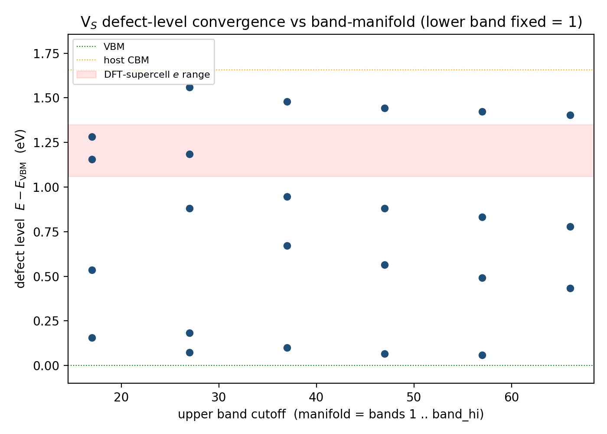
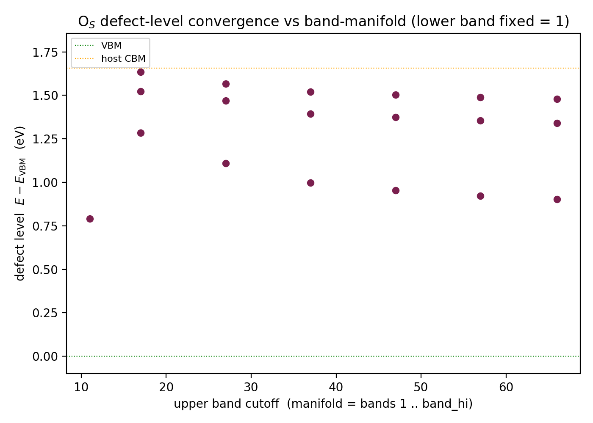
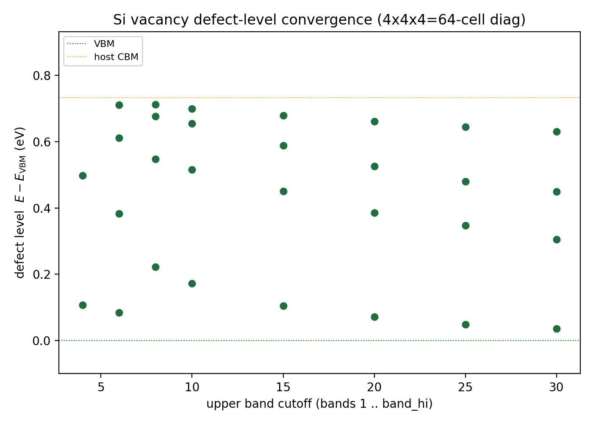

Contents
The literature electron–defect approach (e.g. eq. (S1) of the referenced works) writes a single-defect Hamiltonian
and obtains the defect density of states by diagonalizing it in the coarse-grid Bloch basis $i=(n,\mathbf k)$:
On an $N_{\mathbf k}$-point coarse grid this is equivalent to a single defect in an $N_{\mathbf k}$-cell supercell — obtained from one dense diagonalization, reusing $\Delta V$ and the host bands $\varepsilon_{n\mathbf k}$ rather than recomputing self-consistently. It is the DOS form of the Koster–Slater / explicit $T$-matrix approach.
⚠️ Correction (this page was rewritten). Earlier versions of this page reported defect levels from a diagonalization that omitted the matrix-element normalization. The host bands $\varepsilon_{n\mathbf k}$ are read in eV while the stored matrix element $M_{ij}=\langle i|\Delta V|j\rangle$ is in Rydberg and is the per-primitive-cell element; the single-defect coupling is
$$ g_{ij}=M_{ij}\,\frac{\mathrm{Ry}}{N_{\mathbf k}},\qquad \mathrm{Ry}=13.6057\ \text{eV}. $$Omitting the $\mathrm{Ry}/N_{\mathbf k}$ factor over-weighted the perturbation by $N_{\mathbf k}/\mathrm{Ry}\approx10.6$ and produced spurious, non-converging in-gap levels. All previous numerical tables on this page are retracted. With the correct $g_{ij}$ the levels converge cleanly, as shown below. The fix was confirmed against an independent implementation (the EDT/Sternheimer code), which uses the same $H=\mathrm{diag}(\varepsilon)+M\,\mathrm{Ry}/N_{\mathbf k}$.
1. Direct mode
EDI's direct mode (edmat_direct_from_file=.true.) computes $M(\mathbf k_i,\mathbf k_f)=\langle i|\Delta V|j\rangle$ directly from the wavefunctions for the band range band_ed, with no Wannierization or fine interpolation. The coarse Bloch $M$ is then assembled offline into $H=\mathrm{diag}(\varepsilon_{n\mathbf k})+M\,\mathrm{Ry}/N_{\mathbf k}$ and diagonalized.
2. Band-manifold convergence (corrected normalization)
The diagnostic test: slice the host-band basis to the lowest $N$ bands and track the in-gap eigenvalues vs $N$. A real bound state converges (stable count, level approaches a fixed value); a basis-truncation artifact keeps moving and does not settle.
MoS₂ V$_S$ (sulfur vacancy), 12×12 grid ($N_{\mathbf k}=144$)
Using the active window (bands 7–66, excluding the deep 1–6 semicore — the choice the independent EDT run also makes via an energy window):
| manifold | in-gap levels ($E-E_{\rm VBM}$, eV) |
|---|---|
| bands 7–36 (30) | 0.200, 0.898, 1.365 |
| bands 7–46 (40) | 0.099, 0.824, 1.300 |
| bands 7–66 (60) | 0.020, 0.703, 1.244 |
The count is stable at 3 and the highest level converges monotonically → ≈ +1.24 eV, inside the DFT-supercell range (6×6: ≈1.15; 9×9: ≈1.06) and matching the independent EDT result (a₁ at +0.005, $e$ at +1.205). Including the deep semicore bands 1–6 (full 1–66 window) adds some jitter and shifts the cluster, so the active window is the cleaner basis.

V$_S$ in-gap levels vs band-manifold size (full 1–66 window shown; red band = DFT $e$ range).MoS₂ O$_S$ (oxygen substitution), 12×12 grid
| manifold | in-gap levels ($E-E_{\rm VBM}$, eV) |
|---|---|
| bands 1–17 | 1.285, 1.522, 1.636 |
| bands 1–37 | 0.997, 1.394, 1.521 |
| bands 1–66 | 0.902, 1.340, 1.478 |
Stable count 3, monotonic convergence (vs the earlier spurious 5 scattered levels).

Open physics point. The isovalent O$_S$ supercell band structure shows no in-gap state, yet both this method and the independent EDT run produce in-gap levels for the frozen, unrelaxed O$_S$ $\Delta V$. This is most likely the unrelaxed geometry (the smaller O relaxes inward) and/or the first-order (non-self-consistent) treatment — not a normalization issue. Relaxed-geometry $\Delta V$ and/or the Sternheimer rest-dressing are the natural next checks.
Si vacancy (3D, textbook case), 4×4×4 grid ($N_{\mathbf k}=64$)
A clean 3D control: ideal $T_d$ Si vacancy → an $a_1$ resonance + a $t_2$-derived manifold. PBE gap 0.73 eV.
| manifold | in-gap levels ($E-E_{\rm VBM}$, eV) |
|---|---|
| bands 1–6 | 0.084, 0.383, 0.611, 0.712 |
| bands 1–15 | 0.104, 0.451, 0.589, 0.679 |
| bands 1–30 | 0.036, 0.305, 0.449, 0.630 |
Stable count 4 ($a_1$ near the VBM + a $t_2$-derived triplet, split by the small 4×4×4 cell), converging monotonically — confirming the method works on a 3D defect away from any 2D specifics.

3. Setup
edmat_direct_from_file = .true.
filki_direct = 'kfull.dat' ! N_k coarse k (12×12 MoS₂ / 4×4×4 Si)
filkf_direct = 'kfull.dat'
band_ed = '7-66' ! active window (MoS₂); '1-30' (Si)
pot_align = 'none'Offline: $H=\mathrm{diag}(\varepsilon_{n\mathbf k})+M\,\mathrm{Ry}/N_{\mathbf k}$, Hermitize, eigvalsh; in-gap = eigenvalues between host VBM and CBM. Si supercell = 4×4×4 of the 2-atom FCC primitive (128 atoms), ideal (unrelaxed) vacancy at the cell center.
4. Caveats
- Normalization $g=M\,\mathrm{Ry}/N_{\mathbf k}$ is essential (see correction box).
- Alignment: these runs use
pot_align='none'; the independent EDT runs use'vacuum'(2D). Alignment shifts absolute positions (and is why the V$_S$ $e$-doublet here is not exactly degenerate vs EDT's clean +1.205/+1.205); it does not change the convergence behavior. - Frozen, unrelaxed $\Delta V$ (neutral defect); absolute levels carry the usual PBE / Γ-only-SCF / coarse-$k$ uncertainties.
- $N_{\mathbf k}$-point Bloch grid = $N_{\mathbf k}$-cell effective supercell.